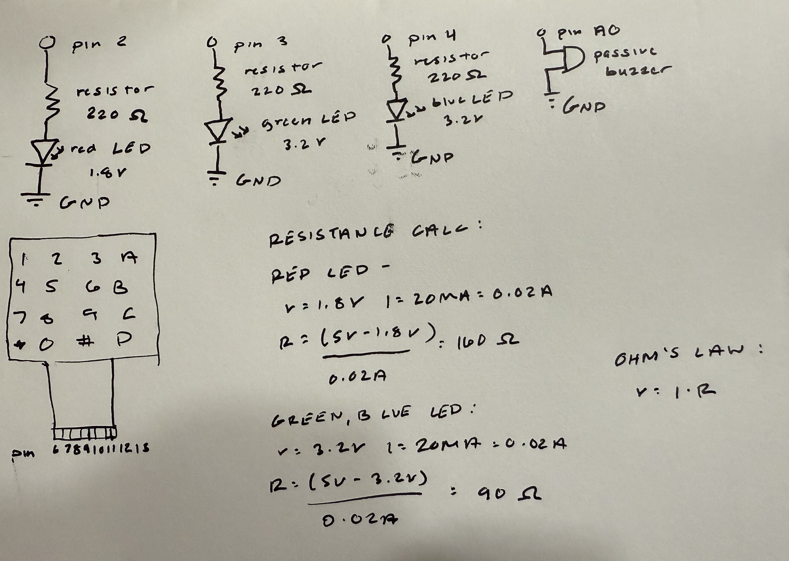
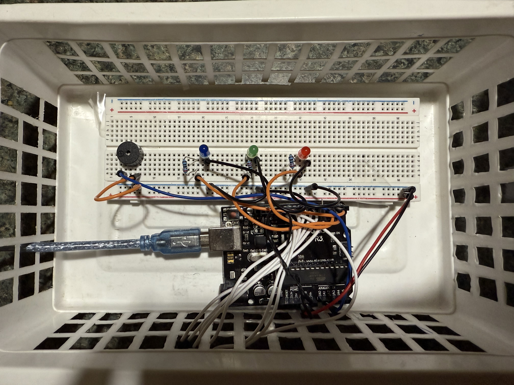
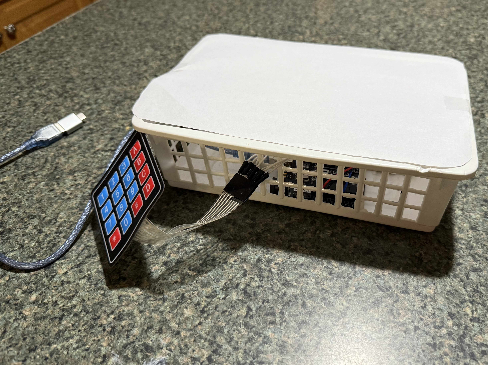

For my final project, I created an rhythm, memory based game where users must replicate a sequence of LEDs and sounds generated by the Arduino by pressing corresponding buttons on a keypad.

The schematic for this circuit shows how the components are connected. LEDs are connected to pins 2, 3, and 4 with series resistors to limit current. A passive buzzer is connected to pin A0 for sound output. The keypad is connected using multiple digital pins for rows and columns.


The physical circuit ensures that all components are properly connected as per the schematic within an enclosed box for presentablility.
#include //initializes keypad library
const int redLED = 2; //connects red LED to pin 2
const int greenLED = 3; //connects green LED to pin 3
const int blueLED = 4; //connects blue LED to pin 4
const int buzzer = A0; //connects passive buzzer pin A0
const byte ROWS = 4; //defining keypad rows
const byte COLS = 4; //defining keypad columns
char keys[ROWS][COLS] = { //defining keypad labels
{'1','2','3','A'},
{'4','5','6','B'},
{'7','8','9','C'},
{'*','0','#','D'}
};
byte rowPins[ROWS] = {6,7,8,9}; //connects keypad rows
byte colPins[COLS] = {10,11,12,13}; //comects keypad columns
Keypad keypad = Keypad(makeKeymap(keys), rowPins, colPins, ROWS, COLS); //intializes keypad
const int LED_ON_TIME = 500; //determines LED on time
const int LED_OFF_TIME = 250; //determines LED off time
const int MAX_SEQUENCE = 100; //defines max level
int sequence[MAX_SEQUENCE]; //array to hold LED sequence
int level = 0; //current level
int inputIndex = 0; //track player's postiion in sequence
int ledPins[3] = {redLED, greenLED, blueLED}; //set array of LEDs
int tones[3] = {440, 660, 880}; //set array of tones for LEDs
void setup() {
pinMode(redLED, OUTPUT); //intializes red LED as an output
pinMode(greenLED, OUTPUT); //intializes green LED as an output
pinMode(blueLED, OUTPUT); //initalizes blue LED as an output
pinMode(buzzer, OUTPUT); //initializes passive buzzer as an output
Serial.begin(9600); //begins serial communication
randomSeed(analogRead(A5)); //starts with random LED
Serial.println("Memory Game: Press 1=Red, 2=Green, 3=Blue"); //serial comms
delay(1000); //delay
nextLevel(); //start first sequence
}
void loop() {
char key = keypad.getKey(); //receives keypad input
if (key != NO_KEY) { //checks if a key is pressed
int playerChoice = -1; //initalizes player choice
if (key == '1') playerChoice = 0; //if '1' is pressed it corresponds to red LED
else if (key == '2') playerChoice = 1; // if '2' is pressed it corresponds to green LED
else if (key == '3') playerChoice = 2; // if '3' is pressed it corresponds to blue LED
if (playerChoice != -1) { //valid key press
flashLED(playerChoice); //flash LED and respective tone
if (playerChoice == sequence[inputIndex]) { //checks to see if player's choice matches sequence
inputIndex++; //moves to next sequence
if (inputIndex >= level) { //checks if sequence is done
delay(500); //delay
nextLevel(); //move on
}
} else {
Serial.println("Wrong! Game Over."); //serial comms
playFail(); //flash LED and wrong tone
delay(1000); //delay
level = 0; //resets level
inputIndex = 0; //resets index
nextLevel(); /restarts game
}
}
}
}
void flashLED(int color) {
digitalWrite(ledPins[color], HIGH); //turn on LED
tone(buzzer, tones[color]); //play tone to respective LED
delay(LED_ON_TIME); //delay
digitalWrite(ledPins[color], LOW); //turn off LED
noTone(buzzer); //stop tone
delay(LED_OFF_TIME); //delay
}
void nextLevel() {
sequence[level] = random(0,3); //adds a random LED
level++; //increase level
inputIndex = 0; //rests position
Serial.print("Level "); //serial comms
Serial.println(level); //serials comms
for (int i = 0; i < level; i++) { //plays full sequence
flashLED(sequence[i]);
}
}
void playFail() {
for (int i = 0; i < 3; i++) { //plays failure LEDS and tone
tone(buzzer, 200); //play tone
digitalWrite(redLED, HIGH); //turn on red LED
digitalWrite(greenLED, HIGH); //turn on green LED
digitalWrite(blueLED, HIGH); //turn on blue LED
delay(300); //delay
noTone(buzzer); //stop tone
digitalWrite(redLED, LOW); //turn off red LED
digitalWrite(greenLED, LOW); //turn off green LED
digitalWrite(blueLED, LOW); //turn off blue LED
delay(200); //delay
}
}
This code creates a memory based rhythm game using an Arduino, LEDs, a passive buzzer, and a keypad. Each LED is paired with its own sound using two parallel arrays (ledPins[] and tones[]). The nextLevel() function adds a new random step to the sequence and plays it back for the user. The keypad is read using the Keypad library, and each key press is checked against the stored sequence inside the main loop(). The helper function flashLED() handles lighting the correct LED and playing its tone, while playFail() shows an error pattern if the player enters the wrong input. Through these functions, arrays, and simple condition checks, the game increases difficulty each round and provides feedback for both correct and incorrect inputs.
I have been trying to connect the Arduino to p5.js to create a visual interface for the game, but I was unable to get it working in time for the final submission. If I had more time, I would have liked to add this feature along with the ability to change the difficulty level, such as controling the amount of LEDs used or the speed of the sequence, and and a score tracking system. Also I would create a better enclosure for the circuit to make it more presentable.